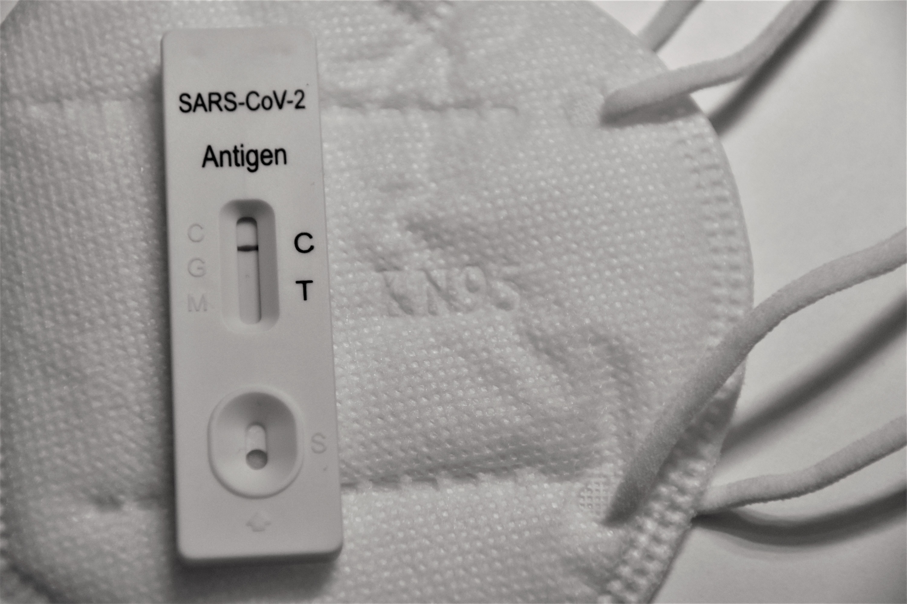

Automotive industry analysis using Phyton
In this project I have used the automobile dataset from Data Analysis with Phyton course from Coursera. The whole project has been elaborated with Phyton (Jupyter Notebook).
In the first part of the project, data cleaning and data exploration techniques have been used for the subsequent analysis.
Then, correlation analysis was carried out and a linear regression model was estimated to obtain a prediction of the price of cars.
Finally, interesting visualisations have been made using the groupby function and bar charts.

Covid Data Exploration with SQL

In this project a Data Exploration of Covid-19 dataset has been carried out using different SQL server skills like Converting Data Types, Joins, CTE's, Temp Tables, Windows Functions or Aggregate Functions among others.
Subsequently, Excel has been used to extract different data of interest from SQL, and a connection has been made with Tableau for the creation of a final visualisation Dashboard.
Nashville Housing Data Cleaning with SQL

In this project, different SQL data cleaning techniques have been carried out on a Nashville Housing database obtained from Kaggle.
US Salary Data in Tableau

In this project, a Kaggle database has been used to obtain information on wages in the United States and their relationship to educational level. For the data cleaning process I used Excel and then imported the data into Tableau to create the visualisations and storytelling. I have identified the audience as a student who has just finished high school and needs a student advisor to help him or her get on track for their academic and professional future.
22/23 Fantasy Preseason Analysis with Power BI

In this project I have obtained data from different sources such as FBRef, La Liga or Futmondo using data scraping techniques.
The data cleaning process has been carried out using Excel, and the subsequent modelling using Power BI.
The final result is an interactive report that allows users of the platform to obtain valuable insights for the next season of La Liga.
The link to the project allows a static visualization in pdf format, if you are interested in the interactive version do not hesitate
to contact me at joantorrentuceda@gmail.com.